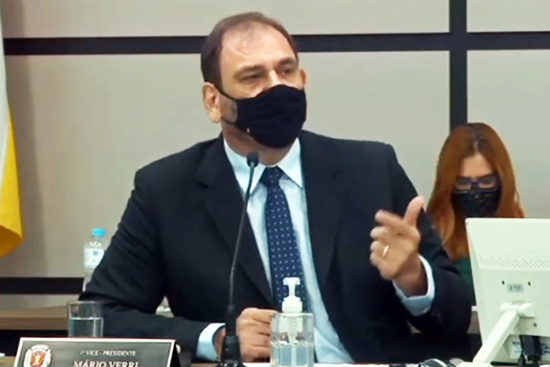

Gratificação de 20% é aprovada para profissionais da saúde da linha de frente contra covid-19
Café com Jornalista – A Câmara de Maringá aprovou, na quinta (11), a
gratificação temporária de 20% aos servidores municipais que atuam na linha de
frente da covid-19. Como recebeu emenda, a Casa realizou sessão
extraordinária – após a ordinária – para ganhar tempo na votação em terceira
discussão. Do contrário, a aprovação em definitivo teria ficado para terça (16).

Em trâmite desde 2 de fevereiro, o Projeto de Lei Complementar 2.038/2021 foi
marcado por um amplo debate. Houve um esforço para ampliar o benefício a um
número maior de servidores, porém, uma emenda que tratava do assunto foi
considerada inconstitucional por aumentar despesas do Executivo – o que é
competência exclusiva do prefeito.